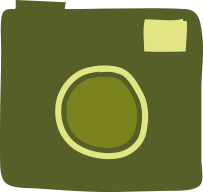

How long do you have?
-
10 min drawing

Paper & pencil, get outside, pick up or find some wild stuff, dirt, leaves, twigs, plants and draw, non stop for 10 minutes. No stopping or talking, just drawing.
-
Bugstagram/Bugattak
Get your kids creating with your smart phone.
Fun app with graphic, comic, cartoon filters and community sharing.
Find a bug, snap it, add a filter, name it something cool share and rate. Earn super bug points
-
Birdstep
Spot a bird, they're everywhere, if you stop and look and listen – how close can you get to that bird?
Be silent, statue like, stealth, move super slow, can you talk to it through your inner wild thing?
Can you snap it, identify it, share it.
-
Spywalk

Take an existing walk you do, school, shops etc and use your spy skills to seek all things wild.
Spy it, snap it, note it, sketch it.
-
Read out
Don't read in. Read out.
Take your kids reading books and read out…
Or…
Downloadable short nature inspired stories.
-
Bughunt
Find a bug patch, check around plants, or under a stone, bugs like to live under stuff.
Try and find 5 types of bug. Put them in a yogurt pot, snap it, note it, sketch it. And release…
-
Feel the Wild
Walk to a park, some wild space, find a wild looking spot and sit or lie down under a tree or somewhere (if its dry).
Put on a blindfold (socks, tea towel will do), listen, feel, and smell the wild (not the sock).
-
Park Rangers
Walk to the park. With a paper and pencil create a map.
What different things live there?
Can you map the different spaces on the map.
Sketch it, snap it, share it.
Go back in 2 weeks.
What has changed?
-
Moon Walk
On a friday/saturday night once in a wee while - take a walk which allows your kids to see and feel the transition from day to night. Notice the sounds, smells and feelings. They'll sleep well after.
-
Build a Wild Den
Find some space and make a camp with kids.
Sticks, branches, blankets. Or go for it, get making and pimp your treehouse
-
Silent Walk
Get out to a proper bit of wild walking space, have a silent walk. Walk together in silence. Notice what you hear. Identify it, try and spot it. Take a break, talk about it, write or sketch what you heard, saw or felt.